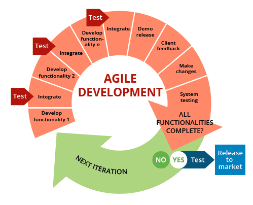
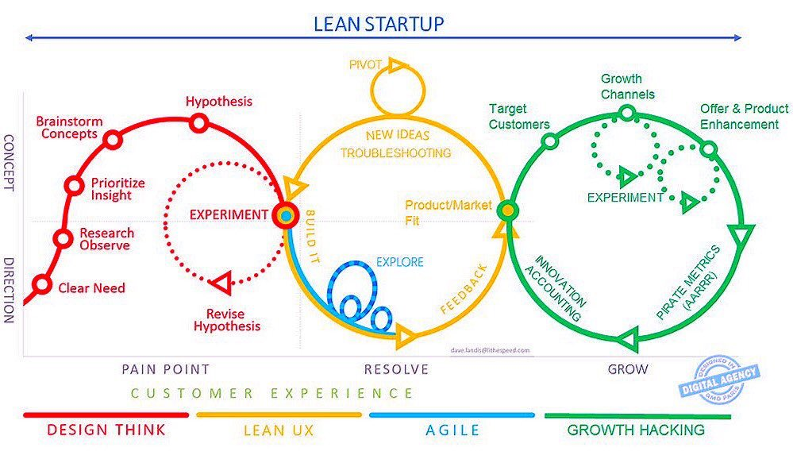
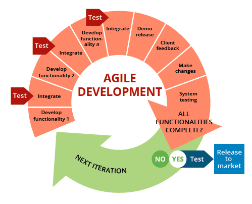
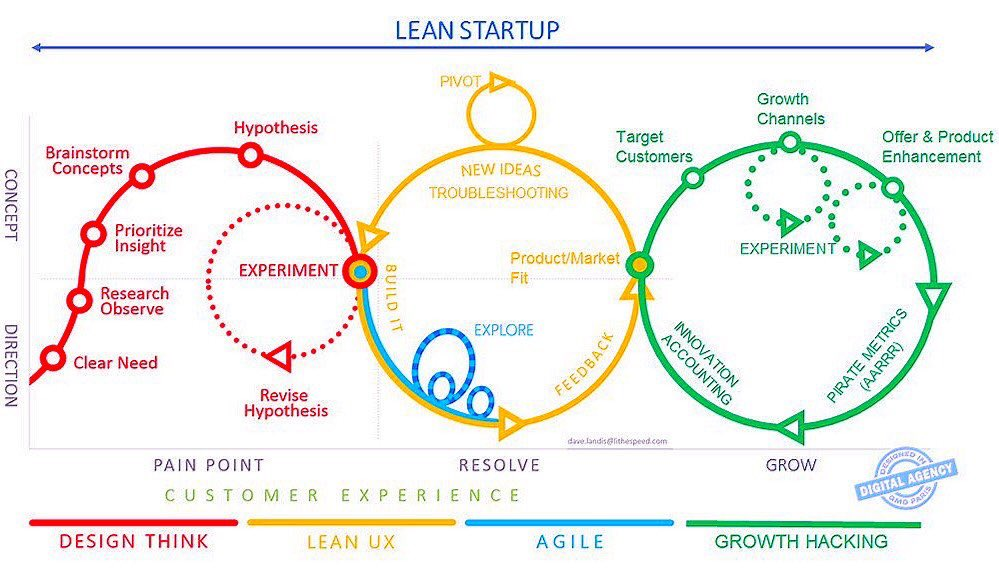

3300 Wells Branch Parkway, Apt. 7303
Austin, TX 78728
Phone 713-302-1030
E-mail: eric.w.voss@icloud.com
LinkedIn TwitterFounder, Early Investor, and Advisor in startup and growth company ventures. Leadership objective is to create and grow long-term business relationships and accomplish shared goals working with outstanding people, teams, products, services, and systems aligned to deliver consistently outstanding customer, employee, co-founder, and investor experiences.
Investment, management, and advisory projects in a variety of startup companies: E-commerce Energy Purchasing, Air Filtration Disposables, Healthcare Specialty Air Quality & DME Services, and Healthcare Retail startup companies. Investor and Business Advisor to Eyecare, Eyewear, and Eyecare Vision Services company.
Product Development and Market Strategy Consultant for New IT On-line Products and SaaS offerings. Provided IT Product Design, Business Model Development, User Interface Design, Product Quality Assurance, Beta Testing, Customer Discovery, and other Innovation Development Services. Participated in development of first-of-breed online commodity marketing software for a venture arm of a Fortune 1000 company. Acted as advisor to venture team creating first-of-breed online private market systems which featured downloadable software updates via online connection (an advanced feature and deployment model for 1993-94) - thus allowing continuous iteration, improvement, and rapid global deployment of updated application software to users.
HTML5, CSS, Javascript - Spring 2018